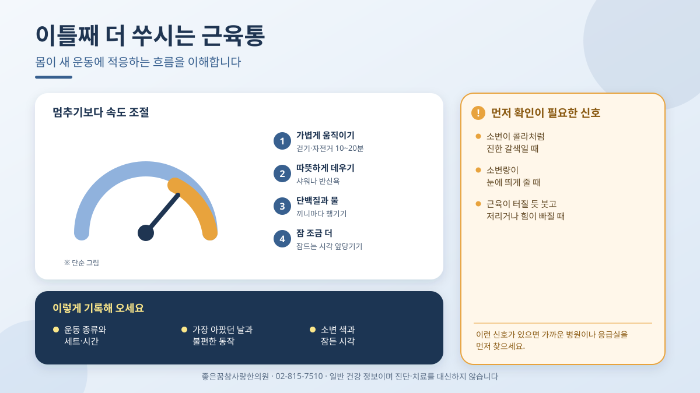

이종호 한의사 감수좋은꿈참사랑한의원 대표원장 (한의사 면허번호 19769)발행 2026-11-26 · 수정 2026-11-26
이 글의 차례
새해 결심으로 헬스장에 등록한 첫날, 트레이너의 안내에 따라 스쿼트와 런지를 몇 세트 하고 나니 생각보다 할 만했습니다. 그런데 다음 날 아침 허벅지가 뻐근하더니, 이틀째에는 화장실 변기에 앉는 것조차 조심스러워집니다. 계단을 내려갈 때마다 난간을 꼭 붙잡게 됩니다.
이렇게 운동하고 하루이틀 뒤에 찾아오는 근육통을 지연성 근육통이라고 부릅니다. 운동을 처음 시작했을 때, 오래 쉬다가 다시 했을 때, 평소와 다른 동작을 했을 때 나이와 상관없이 거의 누구에게나 찾아옵니다. 운동을 꾸준히 하는 분들도 새 동작을 배우면 비슷한 경험을 하십니다.
진료실에서 이 이야기를 들으면 저는 먼저 안심부터 시켜 드립니다. 대부분은 몸이 새로운 일에 적응해 가는 과정에서 생기는 자연스러운 반응이기 때문입니다. 다만 근육통이라고 여겼는데 다른 문제가 섞여 있는 경우도 있어서, 어떤 점을 구분해 봐야 하는지 함께 알려 드립니다.
근육통이 무서워 운동을 그만두시는 분도 적지 않습니다. 이 글은 그런 분들이 다음 운동을 조금 더 편하게 이어 갈 수 있도록, 근육통의 흐름과 돌보는 방법을 정리한 것입니다.
지연성 근육통은 어떤 통증인가요
지연성 근육통은 운동 직후가 아니라 보통 12~24시간 뒤부터 시작해 하루이틀째에 가장 심해지고, 대개 3~5일에 걸쳐 가라앉는 근육의 뻐근함과 통증입니다. 가만히 있을 때보다 근육을 늘이거나 누를 때, 계단을 내려갈 때 더 아픈 것이 특징입니다.
통증은 한 점이 아니라 근육 전체에 넓게 퍼져 있습니다. 허벅지 앞 전체가 뻐근하다거나, 팔 안쪽이 쭉 땅긴다는 식으로 표현하시는 분이 많습니다. 근육이 조금 붓고 단단해진 느낌이 들기도 하고, 팔을 끝까지 펴거나 무릎을 끝까지 굽히기가 어려워지기도 합니다.
이 근육통은 운동 강도와 꼭 비례하지는 않습니다. 강하게 했다기보다 처음 해 보는 동작, 근육이 늘어나면서 힘을 쓰는 동작을 했을 때 더 잘 생깁니다. 그래서 힘든 자전거보다 내리막 걷기나 계단 내려가기 뒤에 더 심한 근육통을 겪는 분도 계십니다.
왜 운동하고 하루이틀 뒤에 더 아플까요
근육은 짧아지면서 힘을 낼 때보다 늘어나면서 버틸 때 더 큰 부담을 받습니다. 스쿼트에서 천천히 앉는 동작, 내리막을 걸을 때 허벅지 앞이 브레이크를 거는 동작, 덤벨을 천천히 내리는 동작이 그렇습니다. 이때 근육 섬유와 그 주변 막에 아주 작은 손상이 생깁니다.
몸은 이 작은 손상을 고치기 위해 그 자리로 물과 회복에 필요한 물질을 보내고, 이 과정에서 근육이 붓고 주변 신경이 평소보다 예민해집니다. 그래서 운동 직후보다 회복 반응이 가장 활발한 하루이틀 뒤에 통증이 가장 크게 느껴집니다.
예전에는 젖산이 쌓여서 근육통이 생긴다고 알려졌지만, 젖산은 운동 뒤 비교적 빨리 사라집니다. 지금은 위와 같은 작은 손상과 회복 반응이 주된 이유로 이해되고 있습니다.
다행히 근육은 이 과정을 겪으면서 같은 동작에 더 잘 버티도록 적응합니다. 같은 운동을 몇 번 반복하면 근육통이 눈에 띄게 줄어드는 것도 이 때문입니다. 그래서 근육통은 운동을 멈추라는 신호라기보다 속도를 조절하라는 신호에 가깝습니다.
근육 손상이나 다른 통증과는 어떻게 다른가요
지연성 근육통과 근육이 찢어지는 부상은 느낌이 다릅니다. 근육 파열은 운동 중 특정 순간에 뜨끔하거나 뚝 하는 느낌과 함께 바로 아프고, 한 점을 누르면 콕 아프며, 힘이 빠지는 느낌이 동반되기 쉽습니다.
- 지연성 근육통: 운동 다음 날부터, 양쪽 근육에 넓게, 3~5일에 걸쳐 가라앉음
- 근육 파열: 운동 중 순간적으로, 한쪽 한 점에, 힘이 빠지고 멍이 들기도 함
- 관절 문제: 근육보다 관절 자리가 아프고, 붓거나 걸리는 느낌이 있음
- 힘줄 문제: 근육과 뼈가 만나는 자리가 아프고, 움직일 때마다 반복됨
근육통이 일주일이 넘도록 줄지 않거나, 한쪽만 유난히 아프거나, 관절이 붓는다면 단순한 근육통이 아닐 수 있어 진찰로 나눠 보는 것이 좋습니다. 콜레스테롤 약처럼 근육통을 일으킬 수 있는 약을 드시는 분도 처방한 선생님께 알려 주시는 것이 좋습니다.
근육통이 있으면 운동을 쉬어야 하나요?
가장 많이 받는 질문입니다. 근육통이 심한 날 같은 근육으로 같은 강도의 운동을 하는 것은 권하지 않습니다. 하지만 완전히 누워만 있는 것보다 가볍게 움직이는 편이 오히려 뻐근함이 덜하다고 느끼는 분이 많습니다.
아픈 근육은 가볍게 걷거나 실내 자전거를 천천히 타며 피를 돌게 하고, 다른 부위 운동을 하는 식으로 일정을 나누면 운동 습관을 이어 가기 좋습니다. 하체가 아프면 상체 운동을, 상체가 아프면 걷기를 하는 식입니다.
근육통이 거의 가라앉은 뒤 다시 같은 운동을 할 때는 처음보다 양을 조금 줄이거나 같은 수준에서 시작하세요. 이렇게 두세 번 반복하면 같은 운동 뒤 근육통이 훨씬 가벼워지는 것을 느끼실 수 있습니다.
운동마다 아픈 자리가 조금씩 다릅니다
스쿼트와 런지, 계단 오르기 뒤에는 허벅지 앞과 엉덩이가 가장 흔하게 아픕니다. 앉고 일어설 때, 특히 계단을 내려갈 때 불편함이 두드러집니다. 내리막 등산 뒤에도 비슷한 자리가 아픈 경우가 많습니다.
팔굽혀펴기나 벤치 프레스 뒤에는 가슴과 팔 뒤쪽이, 턱걸이나 당기는 운동 뒤에는 등과 팔 안쪽이 뻐근해집니다. 팔 안쪽 근육통이 심하면 팔꿈치를 끝까지 펴기 어려워 놀라시는 분도 계십니다.
복근 운동 뒤에는 기침하거나 웃을 때 배가 당기고, 처음 달리기를 시작한 분은 종아리와 정강이 주변이 뻐근해집니다. 아픈 자리가 어제 한 운동과 맞아떨어지는지를 떠올려 보면 근육통인지 아닌지 가늠하는 데 도움이 됩니다.
나이와 생활에 따라 회복 속도가 다릅니다
같은 운동을 해도 회복에 걸리는 시간은 사람마다 다릅니다. 나이가 들수록 근육이 회복하는 속도가 조금씩 느려져서, 젊을 때보다 운동 사이에 하루쯤 더 여유를 두는 편이 편할 수 있습니다.
잠이 짧은 시기, 일이 몰려 긴장이 이어지는 시기, 식사를 자주 거르는 시기에도 근육통이 길어지기 쉽습니다. 이럴 때는 운동량을 평소보다 조금 줄이고 회복할 시간을 넉넉히 두는 것이 오래 운동을 이어 가는 방법입니다.
지연성 근육통을 두고 자주 헷갈리는 것
첫째, 근육통이 있어야 운동이 된 것이라는 생각입니다. 근육통은 새로운 자극에 대한 반응일 뿐, 운동의 성과를 재는 잣대는 아닙니다. 근육통이 없어도 꾸준히 하면 근육과 체력은 쌓입니다.
둘째, 아플 때 세게 주무르거나 강하게 늘여야 빨리 풀린다는 생각입니다. 이미 예민해진 근육을 세게 다루면 오히려 더 아프게 느껴질 수 있습니다. 가볍게 쓸어 주거나 따뜻하게 하며 부드럽게 움직이는 정도가 편합니다.
셋째, 진통제를 먹고 다시 강하게 운동하면 된다는 생각입니다. 아픔을 가린 채 같은 근육을 강하게 쓰면 회복 중인 근육에 부담이 쌓여 부상으로 이어질 수 있습니다.
먼저 이렇게 여쭙니다
처음 오시면 대략 이런 순서로 여쭙니다. 미리 떠올려 오시면 진료가 수월합니다.
- 어떤 운동을, 얼마 만에, 몇 세트나 몇 분 정도 하셨나요?
- 통증은 운동 뒤 언제 시작해서 언제 가장 심했나요?
- 양쪽이 비슷하게 아픈가요, 한쪽 한 점이 유난히 아픈가요?
- 소변 색이 평소와 다르게 진해진 적이 있나요?
- 콜레스테롤 약 등 드시는 약이나 영양제가 있나요?
- 잠과 식사, 물 드시는 양은 어떠셨나요?
운동 기록 앱이나 수첩이 있다면 함께 보여 주세요. 운동량이 갑자기 늘어난 시점과 통증의 흐름이 맞물려 보이면 다음 운동 계획을 함께 세우기 쉬워집니다.
일상에서 먼저 해 볼 수 있는 것
근육통을 빨리 없애는 방법보다는, 며칠을 편하게 지내고 다음 운동을 이어 갈 수 있게 돕는 방법이 중요합니다.
- 가벼운 걷기나 실내 자전거로 10~20분 피 돌게 하기
- 따뜻한 샤워나 반신욕으로 근육 데우기
- 아프지 않은 범위에서 천천히 늘이기
- 끼니마다 단백질 반찬 챙기고 물 충분히 드시기
- 잠을 평소보다 조금 더 충분히 자기
잠은 근육 회복에 가장 중요한 시간입니다. 운동을 시작한 시기에 야근이 겹치거나 잠이 짧으면 근육통이 더 오래가는 것을 느끼실 수 있습니다. 운동한 날만큼은 잠드는 시각을 조금 앞당겨 보세요.
다음 운동은 한꺼번에 양을 늘리지 말고, 일주일에 조금씩 늘려 가는 것이 좋습니다. 새로운 동작은 처음 한두 번은 가볍게 맛보기로 하고, 근육통이 크지 않으면 그다음부터 양을 더하는 식으로 시작하세요.
운동 직후 정리 운동으로 5분 정도 가볍게 걷고 크게 숨을 쉬어 주는 것도 도움이 됩니다. 근육통 자체를 막지는 못하더라도 다음 날 몸이 덜 무겁게 느껴진다고 말씀하시는 분이 많습니다.
한의원에서 함께 살필 수 있는 경우
- 운동을 시작할 때마다 근육통이 길게 가서 운동을 이어 가기 어려운 경우
- 근육통이 지나간 뒤에도 특정 근육이 계속 뭉치고 당기는 경우
- 운동 뒤 잠이 얕아지고 몸이 쉽게 지치는 경우
- 근육통인지 부상인지 헷갈려 운동을 다시 해도 될지 고민되는 경우
- 오래 쉬다 운동을 다시 시작하면서 몸 상태를 점검하고 싶은 경우
좋은꿈참사랑한의원에서는 먼저 단순한 근육통인지, 부상이나 다른 원인이 섞여 있는지를 나눠 봅니다. 맥을 짚고, 아픈 근육과 주변 관절, 반대쪽까지 눌러 보고 움직여 보며 불편한 자리를 확인합니다.
진찰한 내용을 바탕으로 침, 온열 관리, 운동 순서 안내 가운데 지금 상태에 맞는 것을 정합니다. 쉽게 지치고 회복이 더딘 분은 잠과 소화, 식사 리듬도 함께 살핍니다. 한약을 상의할 때는 드시는 약을 확인한 뒤 신중히 정하고, 임신 중이시면 먼저 알려 주시고 산부인과와 상의해 주세요.
다른 병원에서 처방받은 약이 있다면 상의 없이 멈추지 마시고, 근육통이 약과 관련이 있어 보이면 처방한 선생님과 먼저 이야기해 보시길 권합니다.
이렇게 기록해 오시면 상담이 쉬워집니다
근육통은 운동량과 잠, 식사에 따라 흐름이 달라집니다. 2주 정도 간단히 적어 보세요.
- 운동한 날, 종류, 세트 수나 시간
- 근육통이 시작된 시각과 가장 심했던 날
- 아팠던 부위와 불편했던 동작(계단, 앉기, 팔 들기 등)
- 그날 잠든 시각과 깬 시각
- 소변 색이 진했거나 몸이 유난히 무거웠던 날
기록을 나란히 놓고 보면 어떤 운동이 몸에 큰 자극이 되는지, 회복에 며칠이 필요한지가 보입니다. 그 흐름에 맞춰 운동 사이 쉬는 날을 정하면 근육통에 덜 휘둘리면서 운동을 이어 갈 수 있습니다.
근육통과 친해지는 법
근육통은 몸이 새로운 일을 배우고 있다는 신호입니다. 처음 몇 주는 피할 수 없지만, 양을 천천히 늘리고 잠과 식사를 챙기면 점점 가벼워집니다. 근육통 때문에 운동을 그만두기보다 속도를 조절하며 이어 가 보세요.
운동을 처음 시작하는 분께는 첫 2주를 '몸에 인사하는 기간'으로 생각하시라고 말씀드립니다. 이 기간에는 무게나 횟수보다 동작을 익히고, 운동하는 날과 쉬는 날의 리듬을 만드는 데 집중합니다. 그 리듬이 잡히면 양을 늘려도 근육통이 훨씬 덜 찾아옵니다.
함께 운동하는 친구나 가족과 속도를 맞추기보다 내 몸의 회복 속도를 기준으로 삼으세요. 남보다 하루 더 쉬어 가는 것이 결국 더 오래 운동하는 길이 되는 경우가 많습니다.
이번 주에는 운동 뒤 가볍게 걷기와 일찍 잠들기, 이 두 가지만 챙겨 보시길 권합니다. 다음에 오시면 운동 기록부터 함께 펼쳐 보고, 몸에 맞는 운동 간격을 같이 정해 보겠습니다.
이런 증상은 먼저 확인이 필요합니다
- 심한 운동 뒤 소변이 콜라처럼 진한 갈색으로 나오거나 소변량이 눈에 띄게 줄어드는 경우
- 근육이 터질 듯 붓고 단단해지며 저리거나 힘이 빠지고 통증이 점점 심해지는 경우
이런 신호가 있으면 한의원보다 가까운 병원이나 응급실을 먼저 찾으세요.
함께 읽으면 좋은 글
- 운동을 꾸준히 하는 분은 진료 전에 무엇을 알려야 하나요?
- 콜레스테롤 약을 먹기 시작한 뒤 근육이 쑤시고 뻐근할 때는 어떻게 살피나요?
- 근육이 아픈 것인지 관절이 아픈 것인지 어떻게 짚어서 말하나요?
- 체력시험 준비로 갑자기 운동량을 늘린 뒤 무릎과 종아리가 아플 때는?
- 온몸이 쑤시고 검사는 정상이라는 섬유근육통은 어떻게 살피나요?

여쭙는 것
- 어떤 운동을, 얼마 만에, 몇 세트나 몇 분 정도 하셨나요?
- 통증은 운동 뒤 언제 시작해서 언제 가장 심했나요?
- 양쪽이 비슷하게 아픈가요, 한쪽 한 점이 유난히 아픈가요?
생활에서 해 볼 것
- 가벼운 걷기나 실내 자전거로 10~20분 피 돌게 하기
- 따뜻한 샤워나 반신욕으로 근육 데우기
- 아프지 않은 범위에서 천천히 늘이기
한의원에서 함께 살필 것
- 운동을 시작할 때마다 근육통이 길게 가서 운동을 이어 가기 어려운 경우
- 근육통이 지나간 뒤에도 특정 근육이 계속 뭉치고 당기는 경우
- 운동 뒤 잠이 얕아지고 몸이 쉽게 지치는 경우
먼저 확인이 필요한 신호
- 심한 운동 뒤 소변이 콜라처럼 진한 갈색으로 나오거나 소변량이 눈에 띄게 줄어드는 경우
- 근육이 터질 듯 붓고 단단해지며 저리거나 힘이 빠지고 통증이 점점 심해지는 경우
한눈에 보는 표
| 구분 | 핵심 |
|---|---|
| 여쭙는 것 | 어떤 운동을, 얼마 만에, 몇 세트나 몇 분 정도 하셨나요? 통증은 운동 뒤 언제 시작해서 언제 가장 심했나요? |
| 생활에서 해 볼 것 | 가벼운 걷기나 실내 자전거로 10~20분 피 돌게 하기 따뜻한 샤워나 반신욕으로 근육 데우기 |
| 한의원에서 함께 살필 것 | 운동을 시작할 때마다 근육통이 길게 가서 운동을 이어 가기 어려운 경우 근육통이 지나간 뒤에도 특정 근육이 계속 뭉치고 당기는 경우 |
| 먼저 확인이 필요한 신호 | 심한 운동 뒤 소변이 콜라처럼 진한 갈색으로 나오거나 소변량이 눈에 띄게 줄어드는 경우 근육이 터질 듯 붓고 단단해지며 저리거나 힘이 빠지고 통증이 점점 심해지는 경우 |
자주 묻는 질문
근육통이 있는데 운동을 해도 되나요?
같은 근육으로 같은 강도의 운동은 쉬시고, 가벼운 걷기나 다른 부위 운동으로 일정을 나누시길 권합니다. 가볍게 움직이는 편이 누워만 있는 것보다 뻐근함이 덜하다고 느끼는 분이 많습니다.
근육통은 보통 며칠 가나요?
대개 운동 다음 날부터 시작해 하루이틀째에 가장 심하고, 3~5일에 걸쳐 가라앉습니다. 일주일이 넘도록 줄지 않거나 한쪽만 유난히 아프면 진찰로 다른 원인을 함께 살펴보는 것이 좋습니다.
근육통이 있을 때 찜질은 따뜻하게 하나요, 차게 하나요?
지연성 근육통은 따뜻한 샤워나 반신욕으로 근육을 데우며 부드럽게 움직이는 쪽을 편하게 느끼는 분이 많습니다. 다만 다친 순간이 분명하고 붓기가 크다면 처음에는 찬 팩이 나을 수 있어 진찰로 나눠 보시길 권합니다.
단백질 보충제를 먹으면 근육통이 덜한가요?
근육통을 바로 줄이기보다는 회복에 필요한 재료를 채우는 역할로 보시면 됩니다. 끼니마다 단백질 반찬을 고르게 드시는 것이 먼저이고, 보충제는 식사로 부족할 때 고려해 볼 수 있습니다.
근육통 때문에 침을 맞아도 되나요?
진찰로 단순한 근육통인지, 부상이 섞여 있는지를 먼저 나눠 본 뒤 지금 상태에 맞는 방법을 정합니다. 침을 맞은 날의 운동이나 샤워는 진료 때 안내해 드립니다.
좋은꿈참사랑한의원은 재진 때 지난번 이야기부터 이어서 여쭙니다. 진료시간과 예약은 오시는 길에서 확인하세요.
어디서 상담받을 수 있나요?
좋은꿈참사랑한의원은 서울 동작구 만양로2길 2 신성빌딩 3층·5층(서울 동작구 상도동, 7호선 상도역 3번 출구 근처)에 있습니다. 한의사 3명(이종호 대표원장, 조영기 수석진료원장, 정원영 진료원장)이 진료합니다. 진료시간은 평일 09:30~20:00(점심 13:00~14:00), 토·일·공휴일 09:30~15:00이며, 방문 전 전화로 확인을 권합니다. 예약은 네이버 예약, 카카오톡 상담, 전화 02-815-7510로 받습니다.
이 글은 일반적인 건강 정보이며 개인의 진단이나 치료를 대신하지 않습니다. 증상이 있거나 복용 중인 약이 있다면 진료를 통해 확인하세요. 치료 효과는 개인마다 다를 수 있습니다.
작성 기준: 일반적으로 알려져 있는 건강 정보를 참고해 정리했습니다(대표원장 감수). 증상 기록은 1~2주 동안 하루 1회, 비슷한 시간에 적어 오시면 지난 상태와 비교하기 쉽습니다.